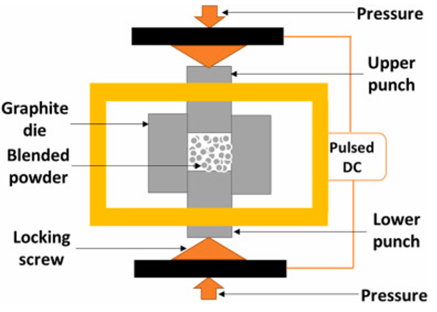
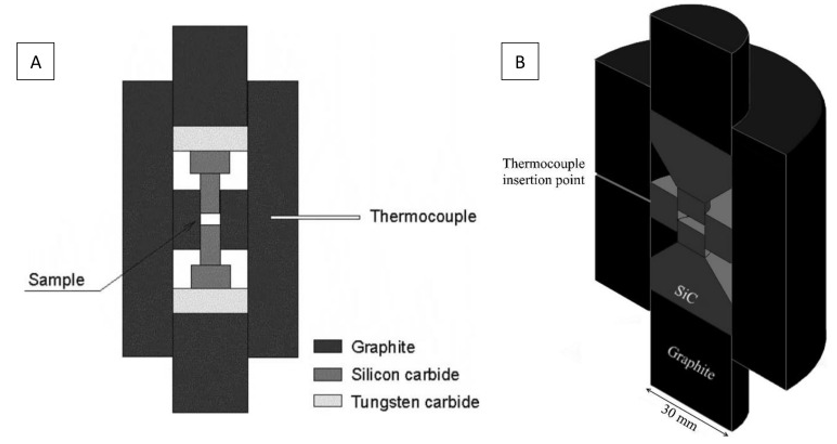
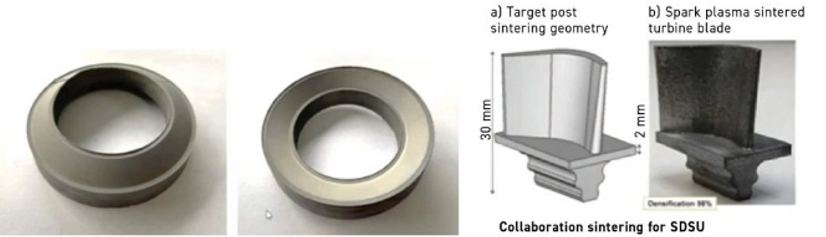

Spark Plasma Sintering of Ceramic Matrix Composites for Turbine Applications
Overview
As part of my advanced materials engineering coursework (ME5600), I co-authored an academic paper investigating spark plasma sintering (SPS) as a fabrication route for ceramic matrix composites (CMCs) used in gas turbine applications. The paper examines the SPS process, how it compares to conventional CMC fabrication methods, and whether it can realistically compete for production-scale turbine components.

Background
CMCs, particularly SiC/SiC systems, are replacing nickel superalloys in hot-section turbine components because they operate at higher temperatures at roughly a third of the weight. The established fabrication routes (chemical vapor infiltration, melt infiltration, and polymer infiltration and pyrolysis) each involve significant tradeoffs in processing time, cost, and achievable density. CVI, for example, can require weeks of furnace time. SPS takes a fundamentally different approach: applying pulsed direct current heating with uniaxial pressure to achieve near-full density in minutes rather than days, at lower temperatures than conventional sintering.
Paper Scope
The paper covers six main areas: the fundamentals of the SPS process and its densification mechanisms, the history and prominent researchers behind the technology (from Bloxam's 1906 work through Tokita's commercialization in the 1990s), current debates in the field (including whether plasma actually forms during SPS, the oxide vs. non-oxide CMC tradeoff for turbine environments, and whether SPS can challenge MI and CVI at production scale), recent advances in high-pressure SPS and the integration of additive manufacturing with SPS for complex geometries, and the key drawbacks that currently limit adoption, including geometric constraints from uniaxial loading, thermal gradients in larger parts, and graphite tooling limitations.

My Contributions
I was responsible for the sections on SPS process fundamentals, the comparative analysis of fabrication routes, the drawbacks section, and building the IEEE-formatted reference list from journal articles and conference proceedings. Writing this paper required synthesizing information across dozens of sources and critically evaluating claims, particularly around SPS's scalability and the still-unresolved debate over its actual sintering mechanisms.
